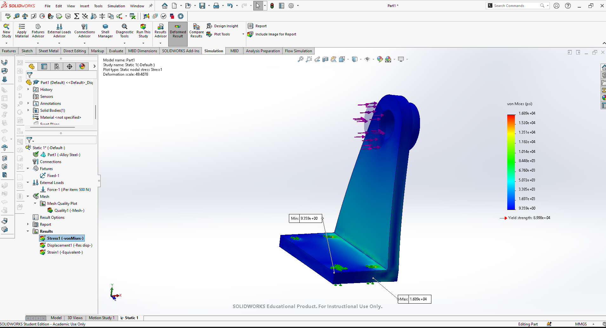
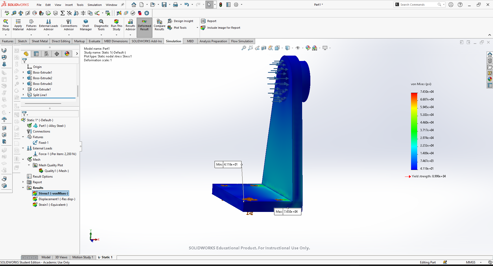
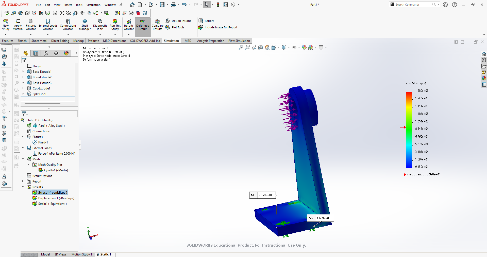

Linear static analysis of an L-bracket in SOLIDWORKS Simulation, characterizing load capacity from safe to failure.
An L-bracket was modeled with a cylindrical boss at the top of the upright. The base was fully fixed and a force applied to the boss face. Material was alloy steel with a yield strength of 89,980 psi. The study type was linear static with a standard solid mesh.
Three load cases were run to bracket the part's capacity. Linear static analysis scales proportionally, so stress increases directly with load:
| Load | Max von Mises | Factor of Safety | Result |
|---|---|---|---|
| 500 N | 16,890 psi | 5.3 | Safe |
| 2,200 N | 74,300 psi | 1.2 | Marginal |
| 5,000 N | 168,900 psi | 0.53 | Fails |
Yield is reached at approximately 2,660 N.


